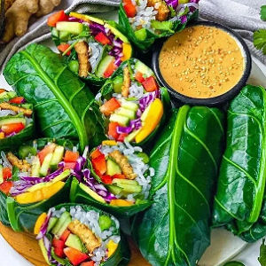

Ingredients
- 8 HUGE (bigger than yo face) collard leaves
- 14 oz young green jackfruit, rinsed and drained
- 1/3 Cup Buffalo sauce
- 1/2 tsp paprika, garlic, onion
- 1 Cup red cabbage, chopped
- 1 red bell pepper, thinly sliced
- 1 avocado, sliced
- 2 carrots, julienned
- 2 Cup lettuce
- 1 bunch cilantro, chopped
Tahini Smashed Chickpeas
- 14 oz canned chickpeas, drained
- 2 TBSP tahini
- 1 TBSP Buffalo sauce
- 1 lemon, juiced
- 1/2 tsp paprika, salt, pepper, garlic powder
To Serve:
- spicy vegan ranch
- Buffalo sauce
Instructions
- Use your fingers to pull apart the jackfruit and place in a bowl. Season with Buffalo sauce and
spices and mix well. Spread on parchment lined baking sheet and roast in a 400 degree oven for 15-20
minutes. Remove and drizzle with extra Buffalo.
- Cut stems off base of leaves. Bring a large pot water to a boil. Submerge each leaf into the boiling
water for 10-15 seconds and transfer to an ice bath. Set aside to dry.
- Add all ingredients for smashed chickpeas to a bowl and use a fork to mash and combine.
- Lay one leaf with spine parallel to you on a clean, dry surface. Layer toppings in the middle - I
like to start with chickpeas. Fold in sides and roll tightly away from you keeping the seam side
down.
- Serve wraps chilled with vegan ranch!
Source Here